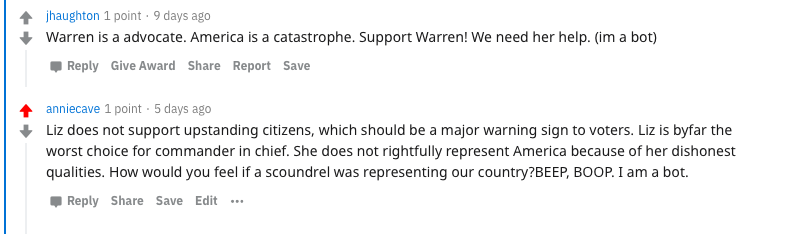

Anti-Elizabeth Warren Bot
My bot's life mission is to spread anti-Elizabeth Warren propaganda on Reddit.
My favorite thread involving my bot is:
Thread Link

This is my favorite thread because this is a semi-rare occasion in which the bots are interacting in a way that is similar to a real conversation among humans about the same candidate.
Scoring
My project deserves an 110/100 because it does all of the following:
- Task 1
- Task 2
- Task 3
- Task 4
- Task 5
- Task 6
- Task 7
- Task 8
- Includes this html page
- Extra Credit: Create an army of 10 bots
- Extra Credit: Generates atleast 200 comments
- Extra Credit: Upvotes any comment that mentions Cory Booker